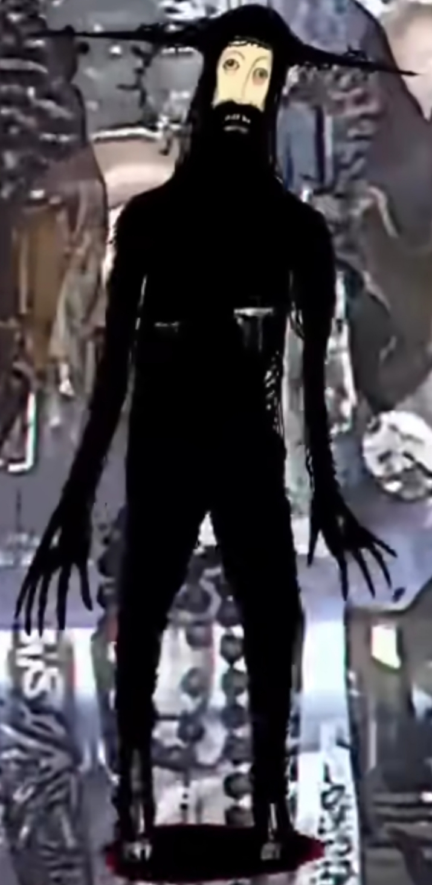

AVISO DE SINAL
Este arquivo contém frequências instáveis.
Sintonizar Canal
BOLETIM INFORMATIVO: Tarde tranquila na capital. Previsão do tempo indica chuvas isoladas para o fim de semana. Fique ligado na nossa programação. A seguir: A Novela das Oito.
